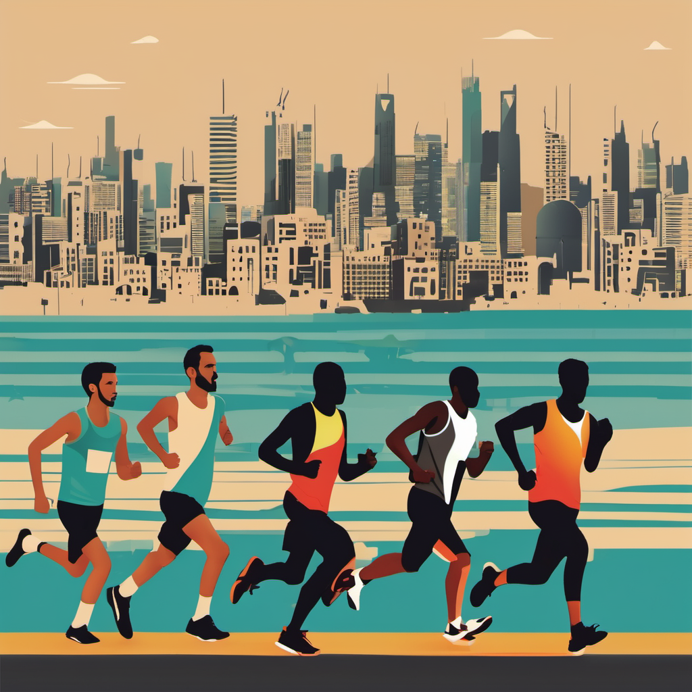

Stride for Hope: Virtual Marathon Supporting Gaza
Run, walk, or cycle to make a difference.
Take strides for Gaza by joining Stride for Hope, our virtual marathon in support of Gaza. Whether you're a seasoned runner, a comfortable walker, or an enthusiastic cyclist, your participation matters. Here's how it works:
Choose your distance. Decide on a target — five, ten miles, or more — that suits your fitness level and schedule, or challenge yourself further. Log your progress with your preferred fitness app, whether it's MapMyFitness, Nike Run Club, Strava, or another — every activity counts toward helping Gaza.
Spread the word. Share your experience on social media using the hashtag #StrideForHope. Whether your posts are about training, hitting a milestone, or sharing stories of solidarity, they help raise awareness and bring more people into the cause.
Ask friends and family to support your fundraiser. With every step you take, you inspire others to help. Set up a personal fundraising page and tell your network why this cause matters to you. Whether large or small, every gift helps provide Gaza's residents with essential relief, medical supplies, and educational support.

Why it matters
Gaza faces significant challenges, including limited access to healthcare and education, and ongoing humanitarian need. Taking part in the virtual marathon lets you contribute directly to relief efforts — your registration fee and any additional donations help provide food, medicine, and educational resources to communities in Gaza. Together, we can make a real difference in the lives of those who need it most. Join us as we stride for hope.
Ready to take part?
Sign up to fundraise, or make a donation to support the marathon.